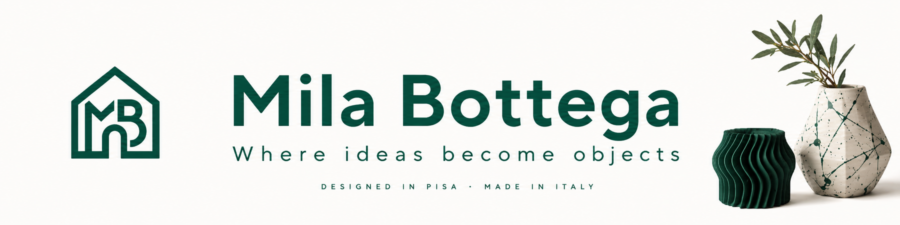

Il laboratorio
Una bottega vera, solo un po' più moderna.
Mila Bottega è un piccolo laboratorio a Pisa, in Toscana. Qui le idee diventano oggetti: li disegniamo, li stampiamo in 3D, li rifiniamo a mano. Niente magazzino, niente pezzi tutti uguali.


Dalla stampa al pennello
Fatto strato per strato, finito a mano.
La stampante costruisce la forma, uno strato sottile dopo l'altro, con filamenti già colorati. Poi il pezzo passa dalle nostre mani: lo puliamo, lo controlliamo, lo rifiniamo. Alcuni oggetti li dipingiamo a mano con il pennello, e ognuno viene un po' diverso dall'altro.
- Su ordinazioneFacciamo il tuo pezzo, per te. Uno alla volta.
- Colori veriFilamenti di marca nei colori che vedi sul sito. Molti oggetti escono già colorati dalla stampa.
- Rifinito e dipinto a manoOgni pezzo passa dalle nostre mani. Alcuni li decoriamo con il pennello.
- Prima la bozzaPer gli oggetti personalizzati, prima di stampare ti mandiamo la bozza. Si parte solo quando ti piace.
Come nasce un pezzo
Dall'idea all'oggetto.
- Il disegnoOgni forma la disegniamo noi, a Pisa: vasi, luci, targhe, regali.
- La stampaStrato dopo strato, per ore. Un oggetto alla volta.
- Le maniPulizia, controllo, rifinitura. E per alcuni pezzi, il pennello.
- Il paccoImballato con cura e spedito a casa tua.